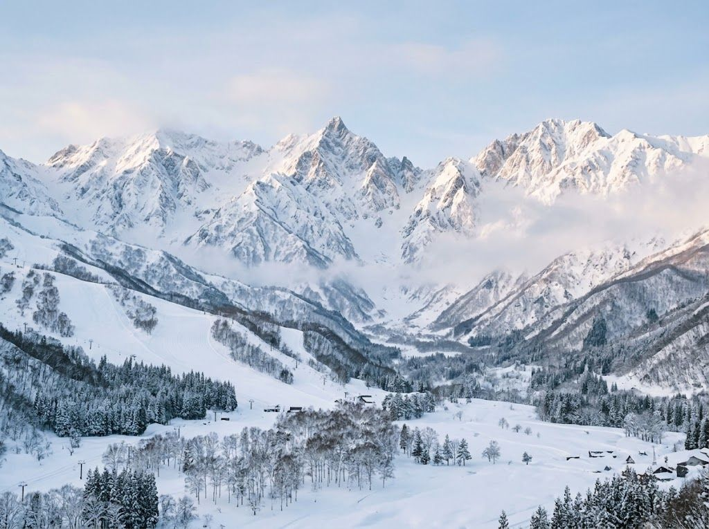

輕井澤王子
Karuizawa Prince長野県 北佐久郡輕井澤町
新手友善親子友善新幹線近
本站怎麼判 東京側最省事的入門場。人工雪、晴天多、outlet 在旁邊。不要期待粉雪。
不適合誰：要粉雪、要大垂直落差、或中高級想找地形的人。
從台灣怎麼到
- 桃園 → 羽田／成田 含機場到東京約 4.5–6 小時；東京出發約 1.5 小時東京 → 北陸新幹線輕井澤約 70 分 → 步行／接駁 10 分
5 天預算帶
NT$35,000–62,0005 天 4 夜，王子飯店不便宜；當日來回可壓成本。
運行資訊
人工造雪為主，例年 11 月就能開，晴天率高。
一日雪質節奏
人工雪，狀態穩、不是粉。連假會嚴重排隊。
現場坑
- 連假租借加買票加纜車能排爆。
- 幾乎沒有上級道。
- 住宿若選王子，總額會接近北海道。
不滑雪的人
輕井澤王子 Outlet 是不滑雪的人的天堂。這點成立。
看看達人怎麼說
本站整理，請讀原文
- 台灣搜尋量極高的入門場。
- 交通與親子設施是優點。
- 雪場規模小，進階者一天就膩。
達人有分歧：有人覺得比 GALA 更適合當日；有人覺得人工雪沒靈魂，寧可多走 20 分去湯澤。
看看社群怎麼說
本站整理，請讀原文。雪況類引用有日期，不是即時雪況。
日本當地
初級者與家庭向，上級道幾乎沒有。
初級者におすすめ。上級者、中級者用コースはほとんどなく、ファミリー向け。
晴天多，人工雪比想像中能滑。
晴天率が高い。人工雪のわりには雪質が良い。
連假買票加租借能各排一小時。
3連休はリフト券を買うのに1時間、レンタルを借りるのに1時間。
延伸閱讀
- 苗場、輕井澤、GALA 怎麼選總覽 · 林氏璧
這頁有錯？告訴我們